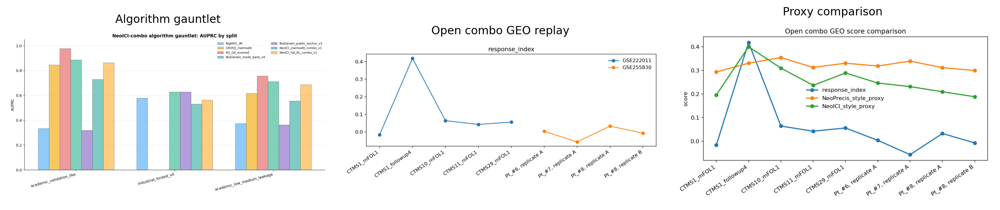

This synthesis page merges the local algorithm gauntlet, the open combo GEO replay, and the proxy comparison into one reviewer-facing summary. The result is intentionally conservative: NeoICI is a strong combo-therapy readiness layer, not a universal winner over NeoPrecis or the existing local champions.

| layer | key_readout | interpretation |
|---|---|---|
| algorithm gauntlet | KG_GA_evolved 0.978 vs NeoICI 0.863 | NeoICI is strong, but not the top local scorer. |
| open combo replay | n=9 paired samples; response median 0.033 | Public combo cohorts show a measurable response-like phenotype. |
| proxy comparison | NeoICI rho 0.817 vs NeoPrecis rho 0.417 | NeoICI-style proxy tracks the response-like index better in this tiny replay. |
| status | claim | evidence |
|---|---|---|
| Allowed now | NeoICI is a combo-therapy readiness layer that can be benchmarked against open vaccine+ICI cohorts. | open combo GEO replay + proxy comparison |
| Allowed now | The open combo replay shows a measurable response-like phenotype and clonotype expansion signal. | n=9 paired samples; response median 0.033 |
| Allowed with caution | NeoICI-style proxy tracks the response-like index better than the NeoPrecis-style proxy in this tiny replay. | Spearman 0.817 vs 0.417; leave-one-out median 0.833 |
| Forbidden now | Universal superiority over NeoPrecis or any published benchmark. | n=9 heuristic proxies only |
| Forbidden now | Clinical-grade vaccine or ICI treatment selection. | post-hoc replay only |
Use the NeoICI package as the combo-therapy readiness layer for Nature Cancer framing. Keep the published NeoPrecis contract as the external benchmark reference, and keep KG_GA_evolved / BioDarwin_mode_bank_v4 as local upper-bound comparators.
The open combo replay is now a real phenotype support layer: 9 paired samples, measurable response-like index, and a proxy comparison that favors the NeoICI-style T-cell-state view on this tiny set.
Do not upgrade this to universal superiority. The correct claim is that NeoICI adds the combo-ICI axis that the older single-objective benchmark does not directly own.
| dataset | sample | response_index | rank_response | NeoICI_style_proxy | rank_neoici | NeoPrecis_style_proxy | rank_neoprecis | top_clone_frac | cytotoxic_score | activation_score | exhaustion_score |
|---|---|---|---|---|---|---|---|---|---|---|---|
| GSE222011 | CTMS1_followup4 | 0.418715 | 1 | 0.400492 | 1.0 | 0.330742 | 4.0 | 0.112252 | 0.400335 | 0.035148 | -0.000806 |
| GSE222011 | CTMS10_mFOL1 | 0.064375 | 2 | 0.309997 | 2.0 | 0.354679 | 1.0 | 0.042926 | 0.079747 | -0.039665 | -0.004460 |
| GSE222011 | CTMS29_mFOL1 | 0.056232 | 3 | 0.289345 | 3.0 | 0.330852 | 3.0 | 0.017256 | 0.067013 | -0.000344 | 0.010608 |
| GSE222011 | CTMS11_mFOL1 | 0.042514 | 4 | 0.237002 | 5.0 | 0.312941 | 6.0 | 0.024789 | 0.016257 | 0.082881 | 0.015184 |
| GSE255830 | Pt_#8, replicate A | 0.032840 | 5 | 0.209637 | 7.0 | 0.312143 | 7.0 | 0.030581 | -0.047777 | 0.149068 | -0.006084 |
| GSE255830 | Pt_#6, replicate A | 0.003766 | 6 | 0.246825 | 4.0 | 0.318846 | 5.0 | 0.007745 | 0.014218 | 0.003822 | 0.012363 |
| GSE255830 | Pt_#8, replicate B | -0.007163 | 7 | 0.188839 | 9.0 | 0.299755 | 8.0 | 0.030454 | -0.060739 | 0.096921 | -0.005116 |
| GSE222011 | CTMS1_mFOL1 | -0.016401 | 8 | 0.195963 | 8.0 | 0.293860 | 9.0 | 0.037096 | -0.026916 | 0.025744 | 0.002357 |
| GSE255830 | Pt_#7, replicate A | -0.056904 | 9 | 0.231548 | 6.0 | 0.339579 | 2.0 | 0.004928 | -0.063741 | 0.012584 | -0.000545 |
| proxy | loo_min | loo_median | loo_max | loo_sd |
|---|---|---|---|---|
| NeoPrecis_style_proxy | 0.238095 | 0.380952 | 0.857143 | 0.174603 |
| NeoICI_style_proxy | 0.738095 | 0.833333 | 0.904762 | 0.062994 |